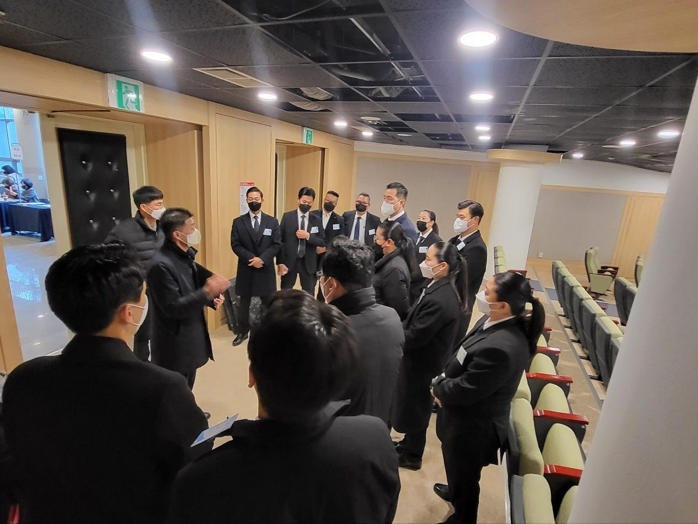
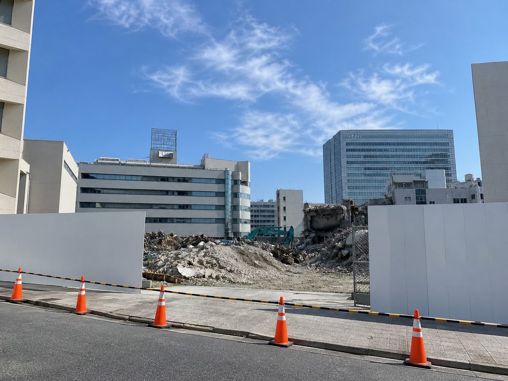
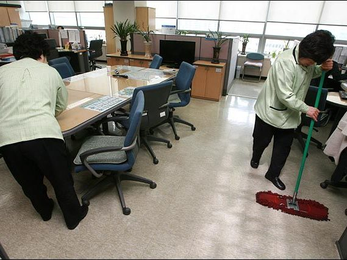
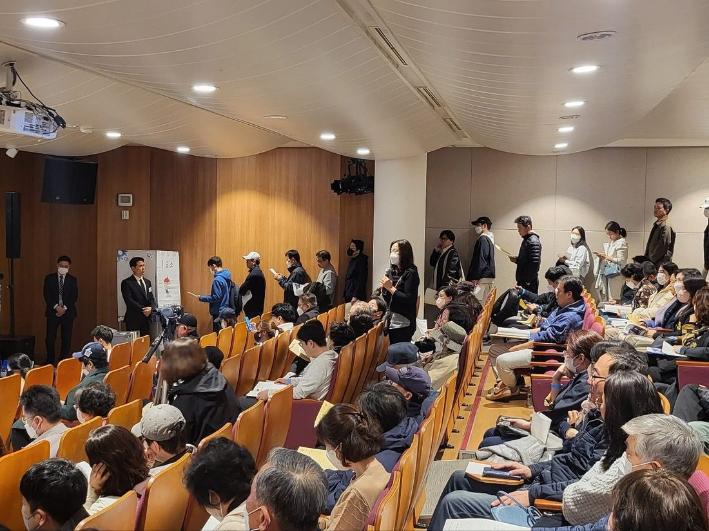
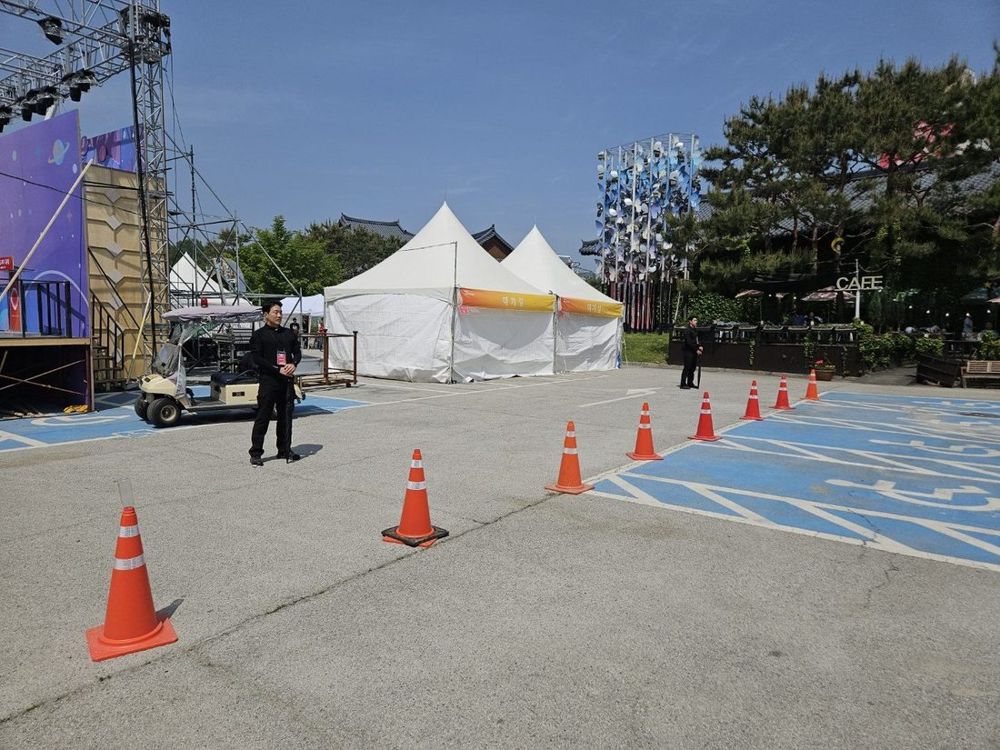
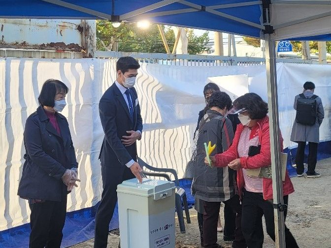

01
FACILITY SECURITY
시설경비
무단 출입자와 잡상인을 사전에 차단하고, 시설 내부를 상시 안전한 상태로 유지·관리합니다.
- 대상 주상복합 · 호텔 · 빌딩 · 공공기관 · 개인주택
- 업무 출입·주차 관리, 순찰, 방범·보안 시스템 운영
(주)와이드가드는 2023년 9월 설립 이후 경비업을 중심으로 시설관리와 현장 지원 서비스를 함께 제공해 왔습니다. 정비사업 현장의 이주관리처럼 사람과 일정이 얽힌 업무부터, 행사장의 혼잡 관리처럼 순간의 판단이 필요한 업무까지 현장의 조건에 맞는 방식으로 수행합니다.
시설부터 행사, 정비사업 현장까지. 각 분야의 업무 범위와 법적 요건을 정확히 이해한 뒤 인력을 투입합니다. 스토킹·협박·보복 우려 같은 개인 신변보호 상담은 비공개로 진행합니다.
FACILITY SECURITY
무단 출입자와 잡상인을 사전에 차단하고, 시설 내부를 상시 안전한 상태로 유지·관리합니다.

02PERSONAL PROTECTION
스토킹·협박·보복성 폭행 등으로 신변이 위협받을 때, 경호 실무 경험을 갖춘 인력이 의뢰인에게 1:1로 밀착해 일상을 지킵니다.
TRAFFIC & CROWD
도로를 점유하는 행사장 등 혼잡과 교통사고 위험이 있는 장소에서 차량과 인파를 통제합니다.
RELOCATION MANAGEMENT
관리처분인가 이후 조합원·세입자의 이주를 관리하고, 철거 구간의 순찰과 범죄 예방을 함께 수행합니다.

05ADMINISTRATIVE ENFORCEMENT
의무자가 의무를 이행하지 않을 때 행정청이 대신 집행하는 현장에서, 인적 사고와 절차상 하자를 방지하도록 지원합니다.

06CLEANING SERVICE
빌딩과 사무실, 공장 등 시설의 청소 용역을 정기·수시로 수행하며 시설의 상태를 유지합니다.
좋은 경비는 인력의 수가 아니라 준비의 정도에서 나옵니다. 와이드가드는 인력, 교육, 점검, 수칙 네 가지를 기준으로 현장을 운영합니다.
적시적소에 필요한 인원을 바로 투입할 수 있도록 상시 인력 대기 체제를 운영합니다. 일정이 급한 현장일수록 차이가 납니다.
경비지도사 월 1회 직무교육과 복무규정·근무수칙·친절 교육을 정기적으로 시행하고, 필요에 따라 위탁교육을 병행합니다.
관리책임자가 정기 점검으로 지적사항을 확인하고 신상필벌로 관리합니다. 문제가 발생하면 즉시 조치와 보완을 진행합니다.
복장 단정, 상명하복 보고체계, 임원진 파악, 주·정차 단속 등 기본 수칙을 현장마다 동일하게 적용합니다.
문의부터 사후 점검까지 다섯 단계로 진행합니다.
사업장 조건과 위험 요소를 확인합니다.
필요 인원, 근무 형태, 장비와 동선을 설계합니다.
현장 수칙과 보고체계를 교육한 인력을 투입합니다.
관리책임자가 상시 점검하고 지적사항을 보완합니다.
근무 결과를 보고하고 다음 운영에 반영합니다.
보유 서류
24시간 상시 대응 야간과 휴일에도 현장이 비지 않도록, 인력 대기 체제로 즉시 투입합니다.
조합 총회, 야외 행사장, 관리처분 총회까지. 실제로 수행한 현장의 모습입니다.



상담 전에 가장 많이 확인하시는 내용을 정리했습니다. 아래에 없는 내용은 전화로 문의해 주세요.
경비업무는 시·도경찰청 허가를 받은 경비업 법인만 수행할 수 있고, 누구든지 허가 없는 업체에 경비업무를 도급할 수 없습니다(경비업법 제7조의2). 특히 집단민원현장에서 경비인력 20명 이상이 필요한 경우에는 직접 고용이 제한되어 경비업 허가 업체에 도급해야 합니다.
재개발·재건축 등 정비사업의 다툼 장소, 행정대집행 장소, 노동쟁의가 발생한 사업장, 100명 이상이 모이는 행사장 등이 해당됩니다. 이 경우 경비원 배치 48시간 전까지 관할 경찰관서의 배치허가를 받아야 하고, 현장에 경비지도사를 배치하며, 경비원 명부를 배치 장소에 비치해야 합니다. 일정이 확정되면 최소 2~3일의 여유를 두고 요청해 주세요.
일반적으로 관리처분인가 이후 조합원·세입자 이주를 관리합니다. 이주 계획 수립, 현장 상주 인력 배치, 이주 독려와 분쟁 대응, 철거 구간 순찰·범죄예방까지 함께 수행하며, 조합 총회·투표 관리 지원도 가능합니다. 현장 상황에 따라 업무 범위가 달라지므로 초기에 상담해 주세요.
현장 위치·기간·필요 인원·근무 형태가 정리되면 대부분 영업일 기준 1~2일 안에 안내드립니다. 급한 일정은 전화(031-954-2001)로 연락 주시면 인력 가용 여부를 먼저 확인해 드립니다.
인력 확보와 배치허가 준비 시간이 필요해 행사 2주 전 요청을 권장합니다. 관객 규모가 크거나 도로를 점유하는 행사라면 더 이른 상담이 안전합니다. 이미 일정이 임박했다면 전화로 가능 여부를 먼저 확인해 주세요.
네. 최근 사회적으로 문제가 되는 보복성 폭행·살인 예고·스토킹·협박 등으로 개인 신상의 불안이 큰 경우, 1:1 개인 밀착 경호로 일상을 지켜 드립니다. 출퇴근길, 법원·경찰서 동행, 일상 외출, 주거지 인근 경계 등 의뢰인의 상황에 맞춰 동선과 근무 방식을 설계합니다.
당사는 경기도남부경찰청 신변보호 허가(제2442호)를 보유한 경비업 법인으로, 경비업법이 정한 범위 안에서 합법적으로 대응합니다. 경찰 신고·접근금지 신청 등 법적 절차와 병행하는 방법도 상담 시 함께 안내드리며, 상담 내용은 비밀로 유지합니다. 급박한 위협이 있다면 먼저 112에 신고하신 뒤 전화(031-954-2001)로 연락 주세요.
경비업 허가증(경기도남부경찰청 제2442호, 시설경비·신변보호·혼잡·교통유도경비, 유효기간 2030. 10. 12.), 사업자등록증, 분사기 허가증을 보유하고 있습니다. 계약 전에 사본을 요청하시면 확인하실 수 있습니다.
현장 조건과 일정을 알려 주시면 필요한 인력과 운영 방식을 정리해 안내드립니다. 상담은 전화가 가장 빠릅니다.
031-954-2001직통 담당자